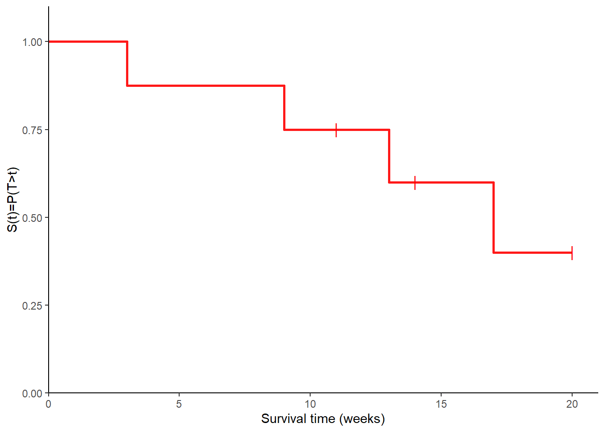
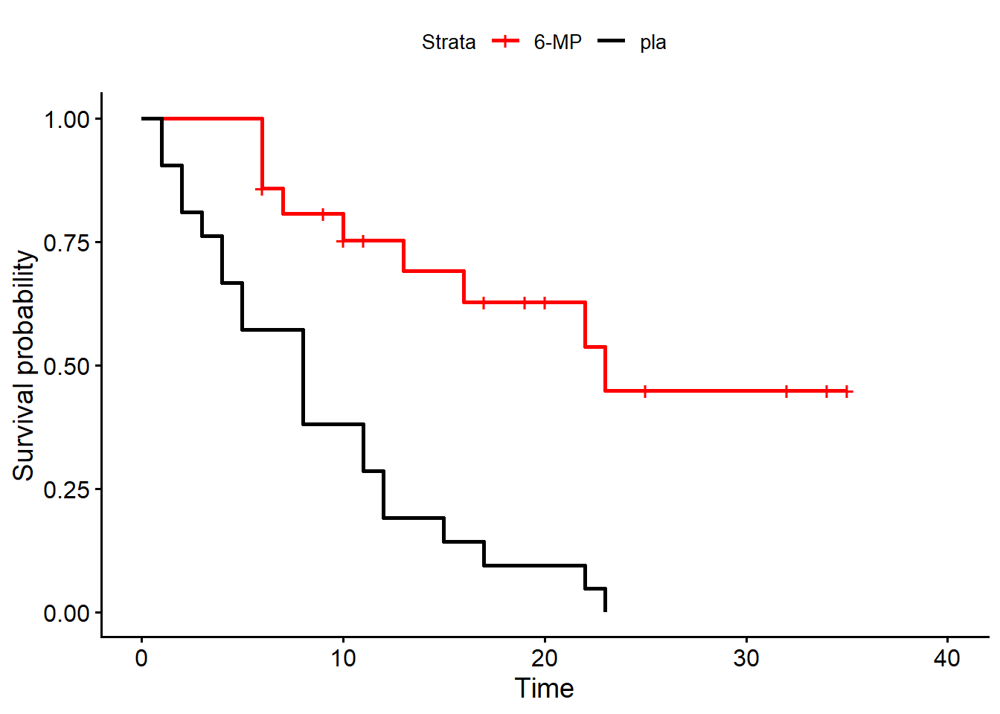

![]()
ID Age at diagnosis Age at outcome Outcome
1 1 25 42 Death
2 2 28 37 Death
3 3 37 57 Alive at end of FU
4 4 39 50 Alive at end of FU
5 5 42 55 Death
6 6 46 49 Death
7 7 51 71 Alive at end of FU
8 8 58 72 Alive at end of FUSurvival Analysis - Examples
Quarto
R
Academia
Medical Statistics
Survival Analysis
Hello dear readers, I hope everything is well with you. Today, I will just write a quick post as a follow up from the previous talk about the basic elements of survival analysis. Make sure to go back to my last post if you would like a re-fresher on the topic or if you feel a bit lost while reading today’s post. In particular, I would like here to go over a couple of examples on how simple survival analysis methods may be applied in practice, using some hypothetical case studies as motivating examples. I think this is useful as it allows to see in practice how the methods introduced before, mostly from a theoretical perspective, can be applied in real life situations and when they may come in handy.
Having said so, let’s start with the exercises, I hope you find them useful!
Examples
Example 1
The following data concern the survival of 8 patients who received an HIV positive diagnosis. The reported data include: patient id, age at diagnosis and at outcome occurrence as well as the type of outcome.
Consider the time at “time at risk” to start at diagnosis and to end when a patient dies or at the end of the follow-up (FU).
- Calculate the time at risk for each patient. This is achieved by simply calculating the duration between the start and end time for each patient. In the event the patient did not experienced the event by the end time, what it is known is that the patient has a survival time at least equal to the observed time duration. This defines a right-censoring mechanism, which is recorded using a corresponding censoring indicator (0 for censored observation and 1 otherwise).
#compute time at risk (survival time)
df_ex1$time <- df_ex1$`Age at outcome` - df_ex1$`Age at diagnosis`
df_ex1$cens <- ifelse(df_ex1$Outcome != "Death", 0, 1)
cbind.data.frame(df_ex1$time, df_ex1$cens) df_ex1$time df_ex1$cens
1 17 1
2 9 1
3 20 0
4 11 0
5 13 1
6 3 1
7 20 0
8 14 0- Calculate the overall death rate. This is obtained by first calculating the total time at risk, given by the sum of all patient survival times, and the total number of deaths. Next, the overall death rate is obtained as the ratio between the total number of deaths and the total time at risk.
#compute overall death rate
sum(df_ex1$cens == 1) / sum(df_ex1$time)[1] 0.03738318- Calculate the Kaplan-Meier estimate of the survival function. We can manually calculate the KM estimate step by step. First, sort the times in increasing order; second, count the number of patients at risk and number of deaths in each time interval; third, calculate the conditional probabilities of surviving each interval; fourth, calculating the cumulative probabilities of survival from time 0 until the end of each interval, representing the KM estimate.
#manually calculate KM estimate
#step 1: sort by unique event times and add time origin
sort_times <- sort(unique(df_ex1$time))
sort_times0 <- c(0, sort_times[-length(sort_times)])
#step 2-3: count the number at risk (having not experienced event) and number of deaths in each interval [t(j),t(j+1))
n.atrisk <- n.dead <- rep(NA, length(sort_times))
for(i in 1:length(sort_times)) {
n.atrisk[i] <- nrow(subset(df_ex1, time > sort_times0[i]))
n.dead[i] <- nrow(subset(subset(df_ex1, time > sort_times0[i]),
time <= sort_times[i] & cens == 1))
}
#step 4: calculate conditional probability of surviving the interval
p.surv.int <- (n.atrisk - n.dead) / n.atrisk
#step 5: calculate cumulative probability of survival from time zero until end of the interval
st_km <- cumprod(p.surv.int)
#put in df from plotting
km.df <- data.frame(sort_times0, sort_times, n.atrisk, n.dead, p.surv.int, st_km)
names(km.df) <- c("Survival_time0", "Survival_time", "n", "d", "p", "S_KM")
km.df Survival_time0 Survival_time n d p S_KM
1 0 3 8 1 0.8750000 0.875
2 3 9 7 1 0.8571429 0.750
3 9 11 6 0 1.0000000 0.750
4 11 13 5 1 0.8000000 0.600
5 13 14 4 0 1.0000000 0.600
6 14 17 3 1 0.6666667 0.400
7 17 20 2 0 1.0000000 0.400We can also double checks our calculations using the function survfit inside the package survival, which allows to easily retrieve KM estimates with additional output.
#check calculations using survival package
library(survival)
km_survfit_ex1 <- survfit(Surv(time, cens) ~ 1, data=df_ex1)
summary(km_survfit_ex1)Call: survfit(formula = Surv(time, cens) ~ 1, data = df_ex1)
time n.risk n.event survival std.err lower 95% CI upper 95% CI
3 8 1 0.875 0.117 0.673 1
9 7 1 0.750 0.153 0.503 1
13 5 1 0.600 0.182 0.331 1
17 3 1 0.400 0.203 0.148 1As it can be seen, KM estimates from survfit ("survival") coincide with those manually computed ("S_KM"), with the only difference that duplicate estimates are removed from the output of the package.
- Using the estimates from 3., draw a KM plot and estimate the median survival time. Once estimates for KM probabilities are computed for each interval, we can simply draw them together with the corresponding survival times to obtain the KM plot using a stepwise function. In Figure 1 the short vertical bars are used to denote the times where censoring occurs.
# add new line to KM data set to make plot start at 1 on Y axis
line1 <- cbind.data.frame(0, 0, 8, 1, 1, 1)
names(line1) <- names(km.df)
km.df <- rbind.data.frame(line1, km.df)
# manually draw KM plot
library(ggplot2)
ggplot(km.df, aes(x = Survival_time, y = S_KM)) + geom_step(color = "red", size = 1,
alpha = 0.9, linetype = 1) + geom_point(data = km.df[km.df$d == 0, ], color = "red",
shape = "|", size = 4) + xlab("Survival time (weeks)") + ylab("S(t)=P(T>t)") +
scale_x_continuous(expand = c(0, 0), limits = c(0, 21)) + scale_y_continuous(expand = c(0,
0), limits = c(0, 1.1)) + theme(panel.grid.major = element_blank(), panel.grid.minor = element_blank(),
panel.background = element_blank(), axis.line = element_line(colour = "black"),
plot.title = element_text(hjust = 0.5), strip.background = element_rect(fill = "white"))
Finally, we can also obtain the median survival time for this data set as the smallest time \(t\) for which \(\hat{S}(t)<0.5\).
#calculate median sruvival time
min(km.df$Survival_time[km.df$S_KM < 0.5], na.rm = TRUE)[1] 17Example 2
The data below show survival times for a group of patients treated for node positive breast cancer. The time of interest is the time (in days) from treatment until either cancer recurrence or death, with associated censoring indicator. Patients are stratified into two groups: those with a low number of positive lymph nodes (\(n=8\)); those with a high number of lymph nodes (\(n=6\)).
ID time cens group
1 1 17 0 low
2 2 336 1 low
3 3 488 0 low
4 4 553 0 low
5 5 967 0 low
6 6 1434 0 low
7 7 1645 0 low
8 8 2455 0 low
9 9 171 1 high
10 10 575 1 high
11 11 868 1 high
12 12 960 1 high
13 13 1142 0 high
14 14 1357 0 highPerform a log-rank test of the null hypothesis that the survival distributions are the same for the two groups. To compute the test statistic, we can again follow a step procedure: first, sort out the number of unique times; second, count the number at risk and the number of deaths in each time interval separately for each group; third, compute the number of patients alive and uncensored, the number of deaths in each interval across groups, and the number of expected deaths in each group.
#calculate log-rank test statistic
# get group levels and their number
group.lev <- levels(df_ex2$group)
n.group.lev <- length(group.lev)
# sort out unique times
sort_times <- sort(unique(df_ex2$time))
sort_times0 <- c(0, sort_times[-length(sort_times)])
# calculate number at risk and dead for each interval by group
n.atrisk <- n.dead <- matrix(NA, nrow = nrow(df_ex2), ncol = (n.group.lev+1))
n.atrisk[, 1] <- n.dead[, 1] <- df_ex2$time
for(i in 1:length(sort_times)) {
for(j in 1:n.group.lev) {
n.atrisk[i, j+1] <- nrow(subset(subset(df_ex2, time > sort_times0[i]), group == group.lev[j]))
n.dead[i, j+1] <- nrow(subset(subset(df_ex2, time == sort_times[i]),
cens == 1 & group == group.lev[j]))
}
}
colnames(n.atrisk) <- c("Time", paste("n", group.lev, sep = "."))
colnames(n.dead) <- c("Time", paste("d", group.lev, sep = "."))
tbl.res <- cbind.data.frame(n.atrisk, n.dead[, -1])
# compute number of alive and uncensored, number of deaths in each interval across groups, and the expected number of deaths in each group
n.all <- apply(tbl.res[, paste("n", group.lev, sep = ".")], 1, sum)
d.all <- apply(tbl.res[, paste("d", group.lev, sep = ".")], 1, sum)
n.exp <- tbl.res[, paste("n", group.lev, sep = ".")] * d.all / n.all
colnames(n.exp) <- paste("e", group.lev, sep = ".")
tbl.res <- cbind.data.frame(tbl.res, n.exp)
kbl(tbl.res)| Time | n.low | n.high | d.low | d.high | e.low | e.high |
|---|---|---|---|---|---|---|
| 17 | 8 | 6 | 0 | 0 | 0.0000000 | 0.0000000 |
| 336 | 7 | 6 | 0 | 1 | 0.5384615 | 0.4615385 |
| 488 | 7 | 5 | 1 | 0 | 0.5833333 | 0.4166667 |
| 553 | 6 | 5 | 0 | 0 | 0.0000000 | 0.0000000 |
| 967 | 5 | 5 | 0 | 0 | 0.0000000 | 0.0000000 |
| 1434 | 4 | 5 | 0 | 1 | 0.4444444 | 0.5555556 |
| 1645 | 4 | 4 | 0 | 1 | 0.5000000 | 0.5000000 |
| 2455 | 4 | 3 | 0 | 1 | 0.5714286 | 0.4285714 |
| 171 | 4 | 2 | 0 | 0 | 0.0000000 | 0.0000000 |
| 575 | 3 | 2 | 0 | 0 | 0.0000000 | 0.0000000 |
| 868 | 3 | 1 | 0 | 0 | 0.0000000 | 0.0000000 |
| 960 | 3 | 0 | 0 | 0 | 0.0000000 | 0.0000000 |
| 1142 | 2 | 0 | 0 | 0 | 0.0000000 | 0.0000000 |
| 1357 | 1 | 0 | 0 | 0 | 0.0000000 | 0.0000000 |
Finally, we can compute the log-rank test statistic and get the corresponding p-value.
#compute chi2 statistic and get p-value
Obs <- apply(tbl.res[, c("d.low", "d.high")], 2, sum)
Exp <- apply(tbl.res[, c("e.low", "e.high")], 2, sum)
chi2 <- sum((Obs - Exp)^2 / (Exp))
chi2[1] 2.152091df <- length(unique(df_ex2$group)) - 1
pval <- round(pchisq(chi2, df = df, lower.tail = FALSE), digits = 3)
pval[1] 0.142We can also check the results using the function survdiff from survival
#compute chi2 statistic and get p-value using survival package
survdiff(Surv(time, cens) ~ group, data=df_ex2)Call:
survdiff(formula = Surv(time, cens) ~ group, data = df_ex2)
N Observed Expected (O-E)^2/E (O-E)^2/V
group=low 8 1 2.64 1.02 2.17
group=high 6 4 2.36 1.14 2.17
Chisq= 2.2 on 1 degrees of freedom, p= 0.1 Example 3
The following data were collected during a trial of the drug 6-mercaptopurine (6-MP, \(n=21\)) compared to placebo (\(n=21\)) in patients with acute leukemia. The outcome of interest is the length of remission in weeks, with the data showing the lengths of remission (in weeks) for patients in each of the two groups, with associated censoring indicator.
ID time cens group
1 1 6 1 6-MP
2 2 6 1 6-MP
3 3 6 1 6-MP
4 4 6 0 6-MP
5 5 7 1 6-MP
6 6 9 0 6-MP
7 7 10 1 6-MP
8 8 10 0 6-MP
9 9 11 0 6-MP
10 10 13 1 6-MP
11 11 16 1 6-MP
12 12 17 0 6-MP
13 13 19 0 6-MP
14 14 20 0 6-MP
15 15 22 1 6-MP
16 16 23 1 6-MP
17 17 25 0 6-MP
18 18 32 0 6-MP
19 19 32 0 6-MP
20 20 34 0 6-MP
21 21 35 0 6-MP
22 22 1 1 pla
23 23 1 1 pla
24 24 2 1 pla
25 25 2 1 pla
26 26 3 1 pla
27 27 4 1 pla
28 28 4 1 pla
29 29 5 1 pla
30 30 5 1 pla
31 31 8 1 pla
32 32 8 1 pla
33 33 8 1 pla
34 34 8 1 pla
35 35 11 1 pla
36 36 11 1 pla
37 37 12 1 pla
38 38 12 1 pla
39 39 15 1 pla
40 40 17 1 pla
41 41 22 1 pla
42 42 23 1 pla- For each group, calculate the KM estimate of the survival function and draw the associated plot. To make things easier, as we have already shown how to manually compute the KM estimates, here we use the
survivalpackage to directly plot the estimates for both groups. We then use the functionggsurvplotfrom the packagesurvminerto draw the plot inggplot2.
# compute KM estimates and draw plot
km_fit3 <- survfit(Surv(time, cens) ~ group, data = df_ex3)
ggsurvplot(km_fit3, data = df_ex3, palette = c("red", "black"), legend.labs = c("6-MP",
"pla"))
- Perform a log-rank test of the null hypothesis that the distributions of the remission time are the same for the two groups. Also here we use the function
survdifffromsurvivalto directly obtain the test statistic esitmate and associated p-value.
#compute chi2 statistic and get p-value using survival package
survdiff(Surv(time, cens) ~ group, data=df_ex3)Call:
survdiff(formula = Surv(time, cens) ~ group, data = df_ex3)
N Observed Expected (O-E)^2/E (O-E)^2/V
group=6-MP 21 9 19.3 5.46 16.8
group=pla 21 21 10.7 9.77 16.8
Chisq= 16.8 on 1 degrees of freedom, p= 4e-05 So, were these examples helpful? I hope so, as I too find it challenging to have a good understanding of concepts such as KM estimate without having a proper look at some concrete examples and try to compute the quantities myself. Then, it is always good to double check your results with those from standard functions to make sure everything was correct and, if not, try to identify were the issues occurred.
Below I also leave further references in case you would like to have a look at some papers covering these basic survival analysis elements in a more rigorous and general way. Till next time!
References
Altman, Douglas G, and J Martin Bland. 1998. “Time to Event (Survival) Data.” Bmj 317 (7156): 468–69.
Bland, J Martin, and Douglas G Altman. 1998. “Survival Probabilities (the Kaplan-Meier Method).” Bmj 317 (7172): 1572–80.
———. 2004. “The Logrank Test.” Bmj 328 (7447): 1073.